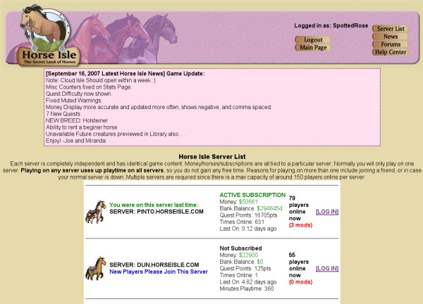

Servers. When you first log in to Horse Isle, your first choice will be which server you wish to be connected to. (A server is a computer which "serves" files to other computers; the various Horse Isle servers "serve" the game, via the internet, to your own computer.) When Horse Isle first "went live," there was only one server, which later became known as "Pinto" as more servers were added. Each server can handle about 150 players at a time. You may log into any server you might like, but we do recommend that new players log on to the newest server where there is more room to accommodate them. Scroll down the server list and you will see which server is the newest.
The server lists will tell you how many other players are online on each server. It also tells you important game information such as your bank balance, how much cash you have on hand, and how many quest points you have earned so far.
From time to time, a pink box will appear at the top of the server list. This will contain news about new additions to the game and other important information. Be sure to read this carefully!
Once you log in to a server, you will be directed to another screen which gives you more information about the current state of the game.